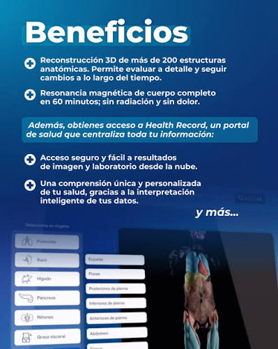

Evaluación integral
Integra información obtenida mediante resonancia de cuerpo completo para una visión amplia del organismo.

Next generation in Health Checkups
Una experiencia de salud integral que ayuda a visualizar y dar seguimiento a la información del cuerpo.

Integra información obtenida mediante resonancia de cuerpo completo para una visión amplia del organismo.
La resonancia magnética utiliza un campo magnético y ondas de radio.
La tecnología permite reconstruir estructuras anatómicas en tres dimensiones.
Permite conservar información para observar cambios a lo largo del tiempo, con acompañamiento médico.